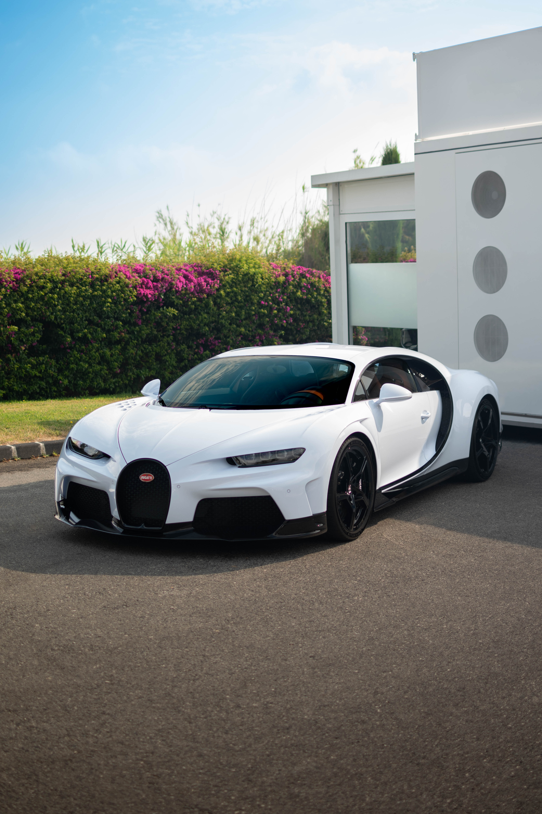
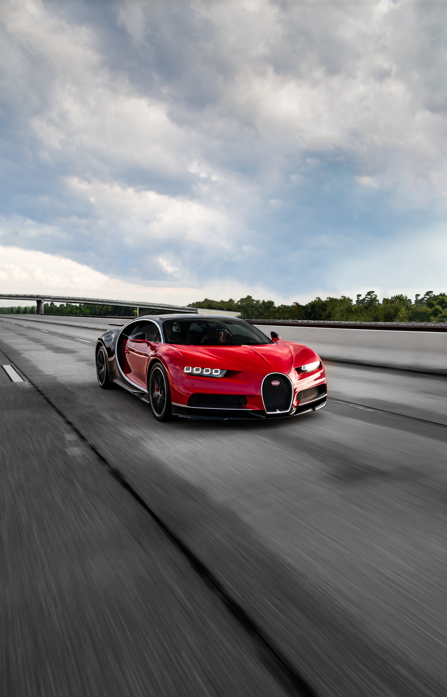

Automobiles Ettore Bugatti was a German then French manufacturer of high-performance cars. The company was innovated in 1909 in the then-German city of Molsheim, Alsace, by the Italian-born artificial developer Ettore Bugatti.
The vehicles were known for their design beauty and for their numerous race triumphs.
Yes! According to carwow, the Bugatti Chiron Supersport 300+, holds 1st place in the list of the fastest cars in the world right now.
In the case of the Aventadorr vs. Chiroon, the answer is yes, in fact, much faster. One might assume the Aventador's weight would give it an edge on speed, but thats not the case.
Acccording to bugatti-broward.com, "The Aventador reaches 60 mph from 0 mph in about 2.5 seconds, and reaches a top speed of about 217 mph. But, The Chiron’s uniquely powerful W16 engine enables it to charge from 0 to 60 mph in just 2.4 seconds. It has a top speed of 304.77 miles per hour."
